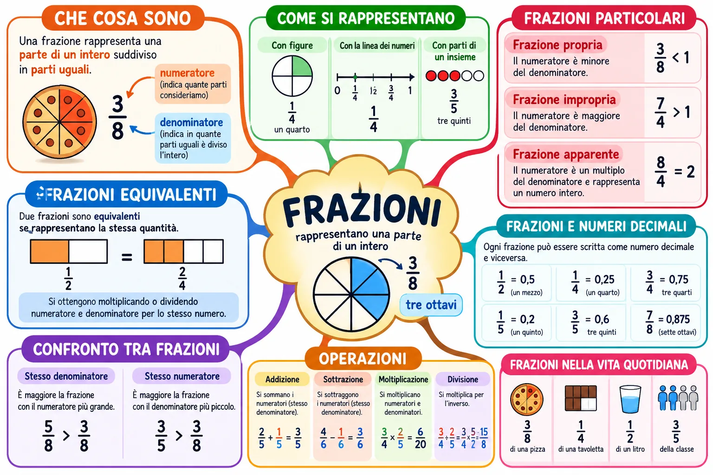

Mappa · Matematica
Mappa concettuale sulle frazioni

Apri a schermo intero Scarica la mappa (PNG)

Versione testuale della mappa
Frazioni
Rappresentano una parte di un intero. Esempio: 3/8, tre ottavi.
Che cosa sono
Una frazione rappresenta una parte di un intero suddiviso in parti uguali.
- Il numeratore, sopra la linea, indica quante parti consideriamo.
- Il denominatore, sotto la linea, indica in quante parti uguali è diviso l'intero.
Esempio: 3/8 di una pizza.
Come si rappresentano
- Con figure: 1/4, un quarto.
- Con la linea dei numeri: 1/4 tra 0 e 1.
- Con parti di un insieme: 3/5, tre quinti.
Frazioni particolari
- Frazione propria: il numeratore è minore del denominatore (3/8 < 1).
- Frazione impropria: il numeratore è maggiore del denominatore (7/4 > 1).
- Frazione apparente: il numeratore è un multiplo del denominatore e rappresenta un numero intero (8/4 = 2).
Frazioni equivalenti
Due frazioni sono equivalenti se rappresentano la stessa quantità: 1/2 = 2/4. Si ottengono moltiplicando o dividendo numeratore e denominatore per lo stesso numero.
Confronto tra frazioni
- Stesso denominatore: è maggiore la frazione con il numeratore più grande (5/8 > 3/8).
- Stesso numeratore: è maggiore la frazione con il denominatore più piccolo (3/5 > 3/8).
Operazioni
- Addizione: si sommano i numeratori (stesso denominatore). 2/5 + 1/5 = 3/5.
- Sottrazione: si sottraggono i numeratori (stesso denominatore). 4/6 − 1/6 = 3/6.
- Moltiplicazione: si moltiplicano numeratori e denominatori. 3/4 × 2/5 = 6/20.
- Divisione: si moltiplica per l'inverso. 3/4 : 2/5 = 3/4 × 5/2 = 15/8.
Frazioni e numeri decimali
Ogni frazione può essere scritta come numero decimale e viceversa.
- 1/2 = 0,5 (un mezzo)
- 1/4 = 0,25 (un quarto)
- 3/4 = 0,75 (tre quarti)
- 1/5 = 0,2 (un quinto)
- 3/5 = 0,6 (tre quinti)
- 7/8 = 0,875 (sette ottavi)
Frazioni nella vita quotidiana
3/8 di una pizza, 1/4 di una tavoletta, 1/2 di un litro, 3/5 della classe.
← Tutte le mappe
Officina Didattica · Carlo Murru. Mappa realizzata con il supporto
dell'intelligenza artificiale e verificata dall'autore. Licenza
CC BY-NC-SA 4.0.